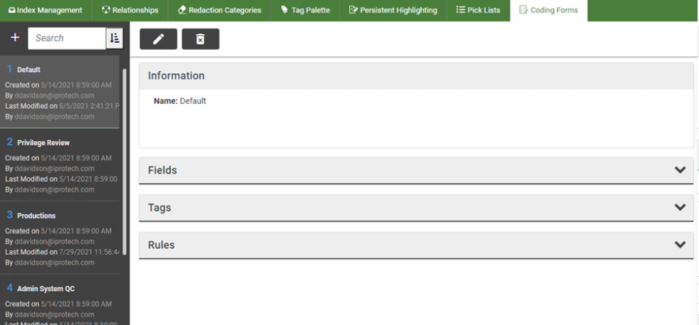

As with many
Names: If several coding forms will be available for users, give some consideration to naming conventions.
Fields and tags: Identify the sets of fields and tags that will best serve case review. Also determine the best order for these fields and/or tags.
Rules: Basic “if-then” rules can be defined regarding tags, tag groups, fields, and/or review status to enforce record editing and/or tagging requirements. Determine whether rules will be defined.
Permissions: Determine whether forms should be restricted to certain user groups.
Also consider the information users will need in order to properly use coding forms and create appropriate case instructions.
Related Topics